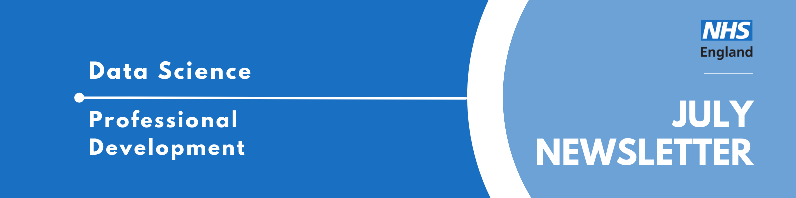
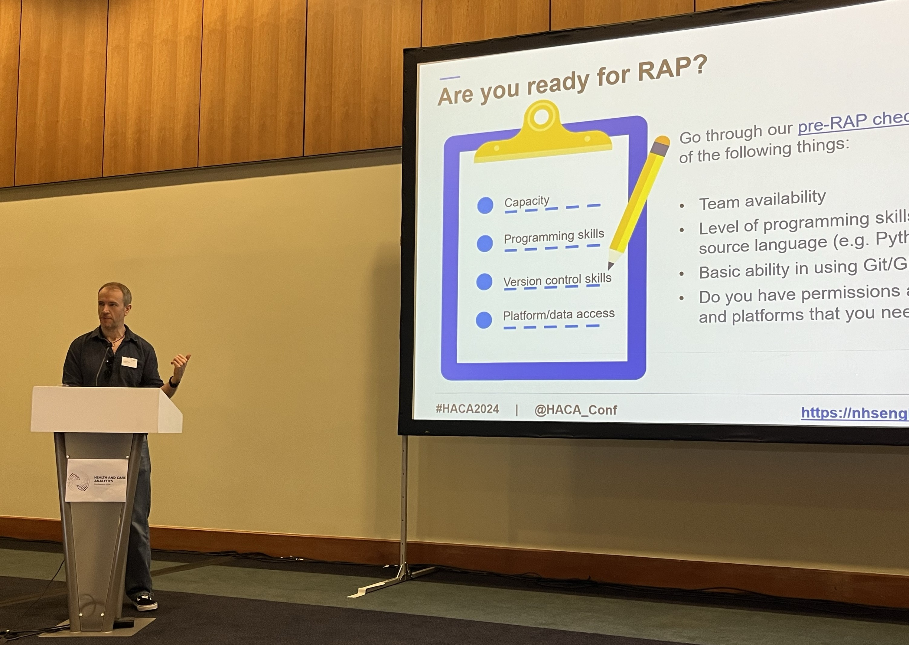
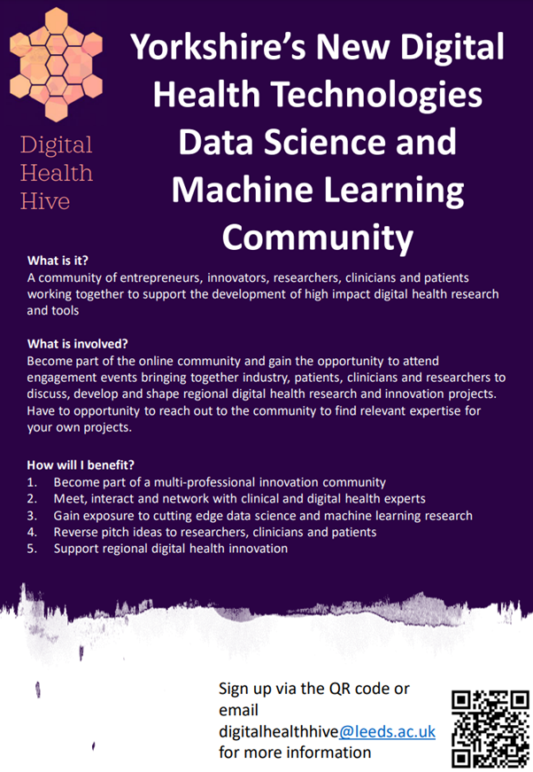

Professional Development Newsletter July 2024

Welcome to the latest Professional Development newsletter, brought to you by the Data Science skilled team Professional Development Functional Team.
The newsletter team are always happy to receive constructive feedback, and we invite you to send us any contributions you may have.
There are some legacy NHS Digital items which we have identified with❗
If you cannot access something of interest to you, please reach out.
Thanks for reading! – PD newsletter team
Health and Care Analytics Conference
This month some of the NHS England Data Science team went to the Health and Care Analytics Conference (HACA) 2024, hosted in Telford. The team had various talks, posters and workshops delivered at the conference about our work and projects. Warren Davies reports back.

At the HACA conference 2024 I gave a talk on RAP to a huge crowd, over 4,000 people, great people, the best people. OK more like 70. And I also helped run workshops on Python and RAP. I highly recommend the experience overall. I gained the following XP:
+10 Planning – it’s tricky to plan when you don’t know in advance the size and experience of the audience (in the workshops we opted to give a flavour of what was possible, along with some simple exercises people could follow along with).
+10 Schmoozing – it is actually very easy. People are very happy to talk about their work and how you might be able to help them.
+20 Resilience – public speaking can be nerve wracking but that is OK, it’s just weakness leaving the body.
But you also have the opportunity to help other people. It’s easy to take for granted in NHS England that we basically have a huge bunch of geniuses at our beck and call that that we can pester and learn from every day. But not every analyst in the wider NHS and health world is so lucky. Within trusts and regional organisations, there are often small teams - or even individuals - who do similar work to us but don’t have the kind of support we do.
With events like HACA we have the chance to connect with them, and point them to resources and communities they might not know about. Which not only helps them, but gives you a warm fuzzy feeling inside too (incidentally, it also ticks a whole load of those “Sharing knowledge” boxes on the competency framework…).
You should definitely go next time. You will build your networking skills, help people out, and get loads of great examples you can use when you apply for that promotion. Plus, everyone loves a road trip right?
School Placement
In July, the NHS England Data Science Professional Development Functional Team hosted a school placement, hosting five students from a London based secondary school to teach them about our work and show them some of the skills they would need to start a career in data science. Liz Kelly describes her experience, working to prepare this week to show the school pupils what our team does, and give them a taste of how it might be to work with us.
This was a rewarding yet difficult task, involving a lot of admin, paperwork, and even a conversation with NHS England lawyers to check we were dotting all our i’s and crossing all our t’s. Naturally, after all this, there were still the dreaded tech setup issues (sigh). But Chaeyoon did an amazing job at fixing them in record time, so the students could still get the most out of their placement.
As a graduate in the Data Science team, I know first-hand how valuable it is for colleagues to take time to explain the various cogs in the NHS system. Because let’s be honest, it’s a bit complicated. So, we made sure to cover as many areas as possible to help with this understanding.
About half of the data scientists (a total of 22) met students during the placement week, alongside more indirect engagements from others such as helping with the training materials. The students rotated through four data science teams and were introduced to two methods of data science ways of working: python programming and collaborative works on GitHub. At the end of the placement week, they had a mock interview and an optional task to build a classifier function with if-else conditions to find which group (from the placement sessions) they could match to the session information. It is incredible to think some of the students had never touched programming before and yet, by the end of the week, they had a basic understanding of Python!
I personally enjoyed the challenge of organising the timetable for the students and leading them through workshops and career talks. Who doesn’t love a good to-do list! And since I don’t cover this kind of outreach in my day-to-day role, this was an excellent opportunity. I could tick off those leadership and mentoring competencies, not to mention dealing with complexity (those pesky access and tech issues). I will admit, teaching a group over Teams is trickier than I thought, especially interactive sessions. The students were eager to discuss and answer questions but sometimes their meeting room microphone didn’t quite catch what they were saying … or perhaps it was just me and the London accent.
As this was the first of its kind, it took a while to discover all the rules and policies. Now we have done this once, subsequent placements should be a lot easier to host. We have collated the resources used here, currently accessible to those in NHSE DS GitHub team. We are working to collate and publish our resources more widely in the future.
As soon as we say “I work for the NHS”, peoples first thoughts are frontline staff, not data scientists. It wasn’t until I was graduating university that I stumbled across data science roles in the NHS and even then, it was purely accidental. When I think back to my time at school I would have loved to do this work experience week in the NHS.
I know I am not alone when I say just how important it is to introduce young people to Data Science, particularly in the NHS. This provides them with more avenues to follow and more ideas of what is out there. It makes the world of possibilities just that bit bigger.
Once again, thank you to everyone involved. I’m sure you’ll agree the placement week was a success, just perhaps short of a few tea and biscuit breaks. The students are not used to being at a desk all day!
Events
Lots of exciting things coming up! See the full calendar here❗
Practical applications of Generative AI: building a chatbot answering questions about your documents.
Tuesday 13th August 2024, 13:00 - 14:00, Online
The recent explosion on the scene of Generative AI and Large Language Models (LLMs) is creating a vast array of opportunities. There is more than one way to leverage this recent breakthrough. You can create a chatbot by directly “plugging” to a LLM and start asking questions. However, LLMs are limited to the information available in the data they have seen during their training. So how to build a chatbot that will be able to answer questions related to documents that the model has never seen. One solution is to use a technique called “Retrieval Augmented Generation” (RAG). After an introduction of Generative AI and transformers, we will go through the RAG logic and explore its benefits and potential drawbacks. The talk is intended for anyone interested in generative AI and its potential applications.
Translational Science Methods Club: Explainable AI
Tuesday 20th Aug 2024, 15:30 - 17:00, Virtual Seminar
The theme of this T-SciM event will be explainable AI (XAI). This refers to a range of approaches that seek to design or evaluate ways to make the outputs of artificial intelligence algorithms more interpretable. Such explainability is important to better understand the mechanisms underlying the models computations and determine how trustworthy and generalisable their results are.
We will be joined by 3 speakers, who will give short talks introducing their work on XAI, followed by a panel discussion with questions and prompts from the audience.
Speakers include: Dr Ahmed Salih, Dr Tapabrata (Rohan) Chakraborty and Sophie Martin (ex-PhD intern with the NHSE DS team).
Health Data Science Seminar Series: Transforming Healthcare: AI in Health Data Science
Thursday 12th September 2024, 14:00 - 15:30, Teams
This series of seminars presents an exciting opportunity to hear about recent developments in health data science, generate ideas and help build the health data science community. It is hosted by the ONS’s Data Science Campus and Health Analysis Team in partnership with Health Data Research UK (HDR UK).
The Health Data Science Seminar series provides a dedicated space for data scientists, policymakers, health professionals, academics, epidemiologists, statisticians and other members of the data science community to come together and explore the potential of data science, to help improve health and health policy.
This event will feature presentations from guest speakers including:
Dr Siegfried Karl Wagner - Ophthalmologist and senior research fellow, University College London Professor Christopher Yau - Professor of Artificial Intelligence and Turing AI Fellow, University of Oxford
Data Science Festival: Oktoberfest
Saturday 19th October 2024, 9am-5pm, CodeNode London
Apply for a FREE ballot entry to this years DSF Oktoberfest. Top tech speakers, incredible partners and a thriving community. There will be a mixture of talks featured at the festival, covering all things data (science, engineering, etc) and a variety of technical levels.
NHS RPySOC 2024 Conference - registration opened
Thursday 21st-22nd November, 9am-5pm, in-person (Birmingham) / Online
The NHS RPySOC 2024 conference is open for registration now! It will be on 21st & 22nd November in Birmingham. This is jointed hosted by the NHS R Community and NHS.pycom, and also promotes Open Source.
- Day 1 will be a mixture of presentations, workshops and lightening talks
- Day 2 (in-person only) will be ‘Unconference’ with suggestions for topics being taken on day 1.
It’s a great chance to show off our work, share our learning with a like minded community and learn a few things yourself, such as the state of the industry and how techniques are being applied elsewhere.
You can either attend:
Got something to present? Abstract submissions deadline extended to Monday 12th August!
See more future events on our confluence calendar❗ Know of any events we should feature next month? Let us know by clicking the “Contribute” button, or here.
Digital Health Hive
Yorkshire based, and interested in joining a community of patients, healthcare professionals and decision makers, companies, and researchers with an interest in digital health, and engaging and interacting with one another to develop digital health research and tools? Join the Digital Health Hive by completing this form or emailing digitalhealthhive@leeds.ac.uk
